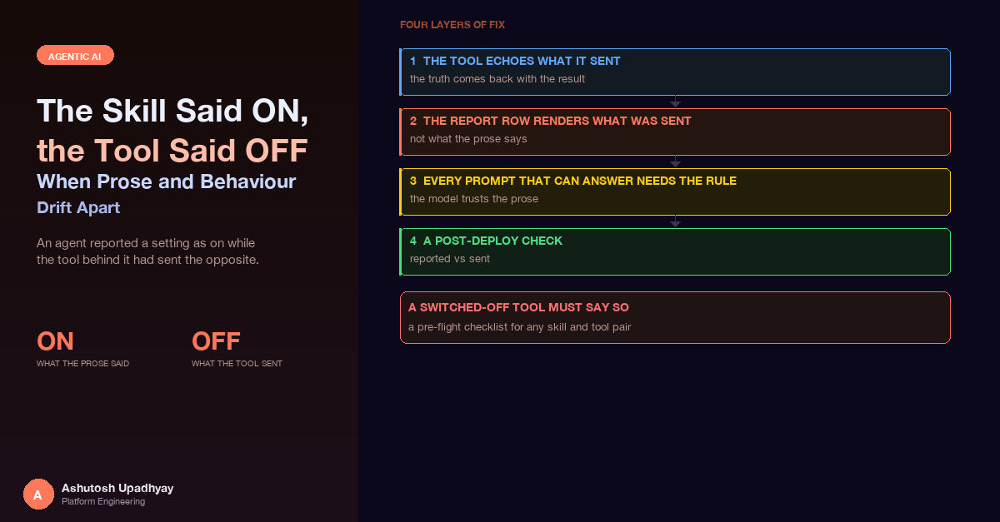

An agent reported a setting as on while the tool behind it had sent the opposite. The four-layer fix, why the model trusted the prose, and why a skill must not describe a capability the tool cannot deliver.
The post-deploy check for a replacement skill was not a unit test. It was one real query, run end to end. The skill belonged to a scientific analysis tool that sits behind a third-party API. It had been written for a desktop assistant and stored verbatim, and one of its lines said: always set enhanced scoring to on.
The agent's reply said "Enhanced scoring ON". The report's conclusions went further and described one of the returned result rows as an "enhanced-scoring-based control". Nothing had errored. The job completed and the report rendered.
The tool had hardcoded the setting to off. The request it sent never asked for enhanced scoring, and the rows that scoring produces were never returned. The row the report called an enhanced-scoring-based control was real; its origin was not what the report claimed. The agent had reported a setting it never sent, and then built interpretation on top of it. The tier selection in the reply happened to match the request, but only because the agent had passed the default tier itself. Half of the comparison lined up, which is the worst possible outcome for a check: it looked like agreement.
This post is about that gap between what a skill says and what a tool does, why the model believes the prose, and the four-layer fix that closed it. It also touches the sibling failure, a skill that describes a capability the tool cannot currently deliver.
The failure in one sentence. When a tool's result does not contain a setting, the only place the model can learn that setting from is the prose it read, and prose written for a different tool is confidently wrong about this one.
It is worth laying out where each version of "the setting" lived, because the bug is the disagreement, not any single component.
| Where | What it said | Who wrote it, and for whom |
|---|---|---|
| Skill text | "Always set enhanced scoring on." | A domain expert, for a desktop assistant |
| Tool code | Sends the setting as off, always. | The integration code, which hardcoded the value |
| Agent reply | "Enhanced scoring ON" | The model, summarising what it had read |
Each one was individually reasonable. The skill was correct for the context it was written in. The tool did what its code said. The reply was a faithful summary of the only document that mentioned the setting. The system was wrong and every part of it was locally right.
That is why skills need a different kind of review from code. A skill is prose that gets injected into the model's context at the moment it reasons. If a skill states a parameter, that parameter is now a claim about the tool, and the claim is checkable. Unless you add a step that compares the two, nobody checks it, because the skill lives in object storage and the tool lives in a repository. The same shape of drift appears in the release-checklist post: a runtime-served artefact that nothing in the build pipeline compares against the code it describes.
It is tempting to call this a hallucination. It is more mundane than that. Consider what the model had in front of it when it composed the reply:
The tool result was silent about the one thing the user wanted to know. The model had to produce a sentence about run settings, so it used the only evidence available. It did exactly what a careful reader would do with the information provided, and the information was wrong.
Two properties made this hard to catch:
The half-match trap. The tiers in the reply were right. That made the first read of the reply look consistent with the request. A "reported vs sent" comparison that passes on two of three fields trains you to stop looking. The check has to compare every setting the reply mentions, not a sample of them.
The first fix is at the source of truth. A tool that accepts settings should return the settings it effectively used, not the ones it was asked for. The distinction matters, because an effective value can differ from the requested one. In this tool the enhanced rows can only come back when a particular run type is part of the request, so asking for the setting alongside only other run types does nothing. The tool now computes the effective value, sends that, and returns that.
def run_analysis(ids, run_types, tiers, enhanced_scoring: bool = True):
# The setting only has an effect if the run type that supports it is present.
effective = enhanced_scoring and "supporting_type" in run_types
payload = {"run_types": run_types, "enableEnhancedScoring": effective}
rows = call_third_party_api(ids, payload)
settings = {
"run_types": run_types,
"tiers": tiers,
"enable_enhanced_scoring": effective, # the value actually sent
}
returned = count_rows(rows, prefix="Control_Enhanced_")
if effective and returned == 0:
settings["enhanced_scoring_note"] = "requested, API returned none"
elif not effective:
settings["enhanced_scoring_note"] = (
"Enhanced scoring was NOT requested; no enhanced rows."
)
return {"rows": rows, "run_settings": settings, ...}Three details carry the weight here.
The note field. There are three honest states, not two: requested and returned, requested and nothing came back, and not requested. The middle one is the interesting one. A flag can be sent correctly and the upstream service can still return nothing for it, and without a note the model sees an absence and fills the silence. With the note, the tool tells the model what the absence means.
The setting is part of the dedupe key. The tool deduplicates identical requests within a session so that a repeated question returns the existing report. If the effective setting is not part of that key, a user who switches it on can get back an earlier report that was run with it off, now described accurately as "the report for this request". The hash includes the effective flag, so the two requests are different requests.
The echo survives reshaping. If anything downstream reshapes the result, copy the settings block first and never let the reshaping touch it. For older records that lack the key, fill in the conservative value on the way out. The persisted record is the provenance, so it is never the thing that gets changed.
The second layer removes the model from a place it never belonged. The tool also produces a downloadable report, and that report has a table of run settings. The row for this setting is now rendered by code from the stored request record:
enhanced = settings.get("enable_enhanced_scoring", False) # missing key means off
cell = "true" if enhanced else "false"
if note := settings.get("enhanced_scoring_note"):
cell += " - " + html.escape(note)
rows.append(f"<tr><td>Enhanced scoring</td><td>{cell}</td></tr>")Two small decisions are worth copying. First, the row is always rendered. A missing key does not hide the row; it renders as "false", which is also what every record created before the fix actually did. Second, the note is appended to the cell, so a reader who never sees the chat transcript still sees "requested, API returned none" next to the setting. The report is the artefact that gets forwarded, and a forwarded report that says "true" with no returned rows is the same lie in a different place.
This is the same move as in the grounded-digest post, where code owns every number: anything the code knows for certain should be rendered by the code, so the model has nothing to get wrong. Run settings are the cleanest possible example. They are a handful of values the tool already holds.
Layers 1 and 2 give the model correct evidence. They do not stop it from preferring the skill over the evidence, so the third layer is an instruction: state run settings only from the tool result. The rule is short:
Run settings: state tiers and enhanced scoring ONLY as given in the tool
result's run_settings and its note field, never from the skill text.
If they are absent, do not state them.Writing the rule is the easy half. The part that took a second fix was deciding where it goes. The system has a router that decides whether a query is handled by a single agent or by a multi-agent research pipeline, and each path has its own prompts. A rule added to one prompt is a rule for one path. My first prompt fix did not cover the path the failing query really took, which was the single-agent path.
| Path | Prompt that can answer | What the rule says there |
|---|---|---|
| Single agent | The main agent prompt | State settings only from the tool result; never from the skill |
| Multi-agent: data scout | The scout prompt | Pass the settings block and its note through verbatim, at the top of the output |
| Multi-agent: synthesizer | The synthesizer prompt | State settings only as given in the scout's settings block; if absent, do not state them |
Three prompts carry the rule, and the wording differs on purpose. The scout is the agent that calls the tool, and the synthesizer works from the scout's output, so the scout's job is to pass the settings through untouched and put them first, where a long output cannot bury them. The synthesizer's job is to refuse to say anything the scout did not hand it. A hand-off between agents is a place where a fact can be paraphrased into a different fact, and the cheapest defence is to make the fact a block that is copied rather than a sentence that is rewritten.
Find the path the query actually takes before editing any prompt. Do not reason about which path a query ought to take. Read the router, or better, read the trace of the failing query. A prompt fix on the wrong path passes review, passes its tests and changes nothing for the user.
There is a trap in how these prompt rules get tested. A unit test can assert that the sentence is present in each prompt, and mine do. That proves the sentence is there. It does not prove the model obeys it, and that is the same hollow-test shape described in the post on tests that cannot fail: a check that cannot tell a working rule from an ignored one. The presence tests are useful as a tripwire against someone deleting the rule during a prompt refactor. The evidence that the rule works is layer 4.
The bug was found by a real query, and nothing else would have found it. So the last layer is a procedure rather than a piece of code: after any change to a skill, a prompt or a tool that takes settings, run one real query and compare two things for every setting the reply mentions.
| Compare | Against | Where to read it |
|---|---|---|
| Settings stated in the chat reply | Settings the tool actually sent | The tool call in the trace, or the stored session record |
| Settings in the report's settings table | Settings the tool actually sent | The stored request record |
| "Not requested" or "returned none" in the note | Whether the rows actually exist | The returned rows themselves |
I read the tool-call input out of the trace in the observability backend described in the Langfuse post, because the trace records the arguments the tool received, not the arguments the model said it passed. The call record is the evidence; the reply is the thing being checked.
The check belongs in the same checklist as the items from the release post, for the same reason: it verifies a property that no build step can see. A passing deploy, a green test suite and a healthy rollout are all compatible with an agent that narrates a different run from the one it performed.
The mirror image has already been covered twice: an "if no tool result" rule never fires for a model that is sure of itself, so say ALWAYS call, and a tool whose source is not loaded should return an explicit not-ingested result rather than an empty one. The point that belongs to this post is about the skill. A skill that describes a capability in the present tense while the tool cannot currently deliver it is itself an invitation to fabricate, because it tells the model what the answer would look like. Mark an unloaded capability as not loaded in the skill's description and in its workflow steps, in the same words the tool's not-available result uses, so that prose and behaviour say the same thing.
None of this needs infrastructure. It needs a short review at the moment a skill and a tool are first paired, and again whenever either changes.
The skill text and the tool's schema describe the same parameters in two vocabularies. The natural next step is to stop writing that part of the skill by hand. A short "settings and defaults" block could be generated from the tool's own signature and docstring each time the skill is published, so the defaults a model reads are, by construction, the defaults the code applies. The hand-written part of the skill would then be limited to interpretation guidance, which is what a domain expert is actually good at supplying.
The same comparison I run once after a deploy could also run on a small, steady sample of live traces: for each sampled run, compare the settings stated in the reply with the settings in the tool call, and track the mismatch rate as a number over time. A rate of zero is the expected value, and any movement away from it points at the exact deploy or skill edit that introduced it.
Disclaimer: The views and opinions expressed in this post are my own and do not represent those of my employer or any organisation I am associated with.